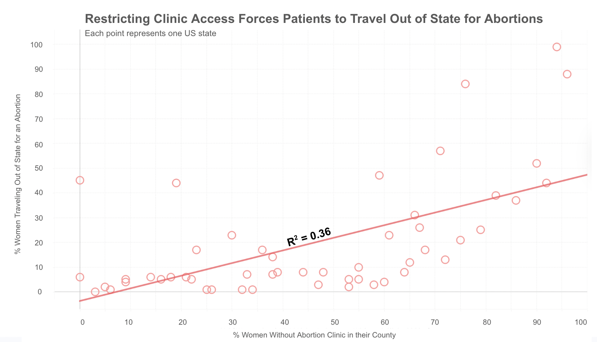
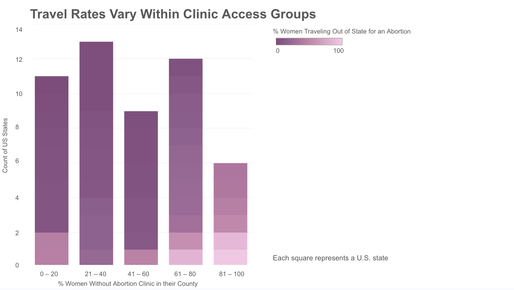

Proposition: Limited abortion clinic access increases the percentage of women who must travel out of state for abortion care.
FOR the Proposition

Design Decisions and Rationale:
-
Scatterplot with Trendline
Diverging Scale of Deceptiveness: +1.5
Motivation: I chose a scatterplot with a linear trendline to visually communicate the relationship between the percentage of women without clinic access and the percentage traveling out of state for abortion care. Scatterplots display correlations between two variables, and the trendline helps viewers quickly identify the direction of the relationship. This design supports the narrative by highlighting the positive slope, making the relationship easier to interpret. However, the trendline may slightly overemphasize the strength of the relationship, since viewers may interpret it as evidence of causation rather than correlation. -
R-Squared Value
Diverging Scale of Deceptiveness: +1.0
Motivation: Adding a trendline and R-squared value automatically communicates a positive relationship, which can be somewhat deceptive. However, the axes, points, and scaling remain true to the data and standard visualization practices. The R-squared value is accurate and listed directly next to the line, and no additional colors are used to suggest positive or negative interpretations. -
Title and Coloring
Diverging Scale of Deceptiveness: -1.0
Motivation: The title presents a stronger causal relationship between clinic access and out-of-state travel than may actually exist. This framing encourages the reader to interpret the visualization as supporting the claim rather than neutrally exploring the relationship. A more neutral title could have simply described the axes (percentage without clinic access vs. percentage traveling out of state).
AGAINST the Proposition

Design Decisions and Rationale:
-
Binned Histogram Chart
Diverging Scale of Deceptiveness: +0.5
Motivation: I grouped the percentage of women without clinic access into bins to simplify the comparison between access levels. Binning removes some precision and visibility of outliers from the data but makes it easier for viewers to compare groups of states with similar access conditions. This transformation shifts the focus away from a precise linear relationship and instead emphasizes differences within categories, which only somewhat shows changes in color throughout each group. -
Coloring of Bars / States
Diverging Scale of Deceptiveness: -1.0
Motivation: I used color to represent the percentage of women traveling out of state for an abortion, which is less immediately interpretable for the reader than position on an axis. I also set the scale of the percentage bins from 0 to 100 since this is the standard range for percentages, even though the maximum value in the dataset is only 94. I considered using a diverging color scheme that would emphasize the highest values more strongly, but instead chose a sequential scheme that makes the differences slightly less pronounced. This results in light and dark colors appearing in each access bin, reinforcing the argument that there is substantial variation within groups rather than a clear pattern across them. -
Title
Diverging Scale of Deceptiveness: -1.5
Motivation: The title “Travel Rates Vary Within Clinic Access Groups” intentionally directs the reader’s attention toward inconsistency in the data within each bin. This framing discourages the interpretation that clinic access alone determines travel behavior and instead encourages viewers to examine the variation inside each category. As a result, readers may focus more on differences within bins rather than comparing trends across bins.
Final Reflection
These two visualizations demonstrated how different visual and text-based choices can change how the same dataset is interpreted. The most straightforward part of the process was generating the initial plot and relationship between the two variables: % of women with access to a clinic and % of women going out of the state for an abortion. It was easy to create the initial visualization and original claim of positive correlation due to simply observing a positive correlation between variables using scatterplot. What proved more challenging was designing a second visualization that used the same data but encouraged a different interpretation. It was also challenging to design and add specific aspects that proved a point (subdued color gradient, trend line, R-Squared value, etc.). After already knowing a “truth” about the data, it was difficult to think about it in a different way and prove the complete opposite narrative. I realized that subtle changes such as grouping data into bins or shifting the title framing can significantly alter the narrative that viewers perceive. It is also essential to realize what visual encodings are easily processed by humans, and using them when you want to communicate a message, but also using more complicated ones as ways to deceive the audience.
This exercise also changed how I think about ethics and deception. I now think that ethical visualization does not necessarily mean eliminating persuasion, since all visualizations involve choices about framing and narrative. Additionally, the guest lecture with Zan made me more aware that all data visualizations should have the goal to communicate a message with the audience. Therefore, without deceptive data manipulation, making impactful choices in the visualization can allow for a stronger communication and impactful addition to research. Ethical visualization involves being transparent about those choices and avoiding manipulations that fundamentally distort the data. However, now the question becomes what does “deceptive data manipulation” mean, and where is the line between deception and attention-focusing. I chose to highlight real patterns in the data without hiding important context, and chose styles that align with my message. In this project, both visualizations use the same underlying data but emphasize different aspects of it, illustrating how simply visualization choices can influence interpretation while still remaining grounded in the evidence.